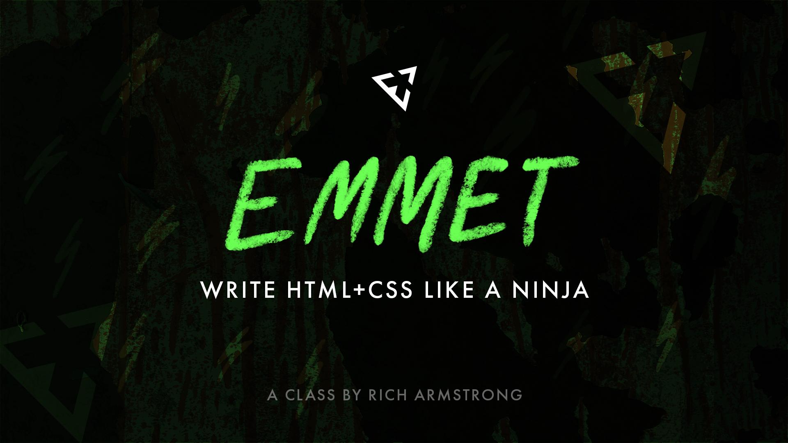

Semana 2: Sintaxis Emmet
Temas aprendidos:
- Aprendizaje de abreviaciones de Emmet para escribir HTML más rápido.
- Uso de Emmet en Visual Studio Code.
- Prácticas de expansión automática de etiquetas, clases y estructuras anidadas.
Ejercicios / Resultados:
- Se escribieron estructuras HTML complejas usando solo Emmet.
- Se utilizaron atajos como `ul>li*5` para generar listas rápidamente.
- Se comprendió cómo combinar múltiples atajos para obtener estructuras completas.
- Ver ejercicio realizado
Reflexión personal:
Durante esta semana, profundicé en el tema de sintaxis emmet. Fue una experiencia enriquecedora que me permitió consolidar los conceptos mediante práctica constante. Pude notar avances en mi comprensión del desarrollo web y adquirí habilidades que podré aplicar en proyectos reales.
